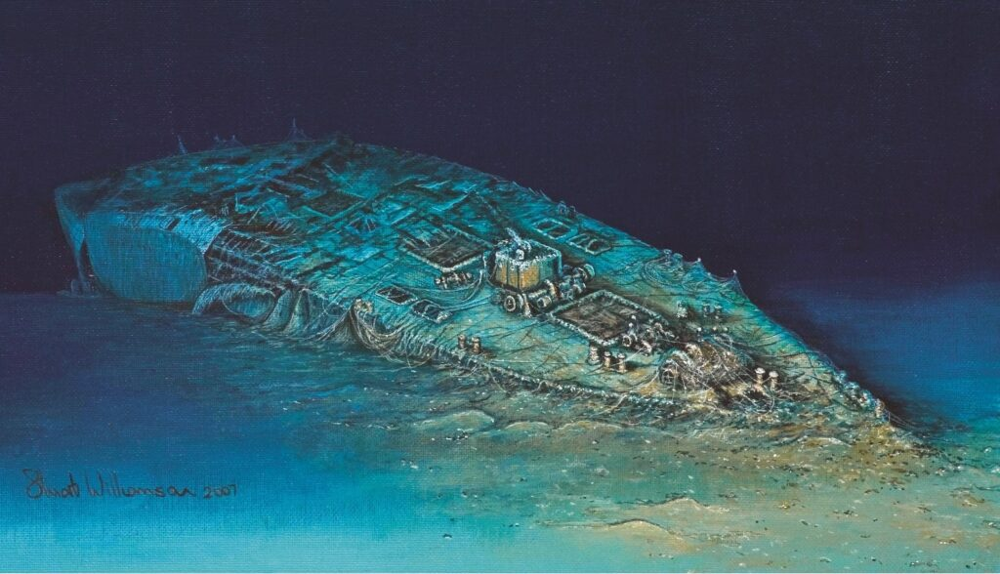

The RMS Carpathia was a British passenger steamship built in 1902-1903 for the Cunard Line. She was constructed by the shipbuilding company Swan Hunter at their yard in Wallsend, England.
Construction & Launch
- Launched: August 6, 1902
- Completed: April 1903
- Built at: Wallsend, near Newcastle upon Tyne
- Purpose: Transatlantic passenger and immigrant service
When first built, Carpathia was not considered a luxury liner like some of Cunard's larger ships. Instead, she was designed to carry:
- About 1,700 passengers
- First Class
- Second Class
- Steerage (Third Class), mainly immigrants traveling to North America
Size & Technical Details
- Length: About 558 feet (170 m)
- Tonnage: Around 13,500 gross tons
- Speed: Approximately 14 knots (moderate speed for the time)
- Engines: Twin-screw steam engines powered by coal-fired boilers
She was built for comfort and reliability rather than speed. Compared to Cunard's faster ships, Carpathia was slower but economical to operate.
Passenger Accomodations
When new, Carpathia was considered comfortable:
- Spacious dining rooms
- Electric lighting (modern at the time)
- Heated Cabins
- Library and smoking rooms for first-class passengers
She mainly sailed between:
- Liverpool
- New York City
- Mediterranean ports like Trieste

Before Titanic
When first built, Carpathia was simply a dependable immigrant liner — not famous yet. That changed in 1912, when she famously rescued survivors from the RMS Titanic after it sank.
But at the time of her launch in 1903, she was just one of Cunard's solid, hardworking ships — built for steady service across the Atlantic.
During the Sinking of Titanic
When the RMS Titanic struck an iceberg late on April 14, 1912, the RMS Carpathia was about 58 nautical miles (107 km) away in the North Atlantic.
She would become the ship that rescued the survivors.
The Distress Call
At 12:25 a.m., Carpathia's wireless operator, Harold Cottam, received Titanic's CQD/SOS distress signal.
Carpathia's captain, Arthur Rostron, immediately:
- Turned the ship toward Titanic's position
- Ordered full speed ahead
- Shut off heating and hot water to send more steam to the engines
- Prepared blankets, food, coffee, and medical aid
- Readied lifeboat stations in case more rescues were needed
Racing Through Ice
Carpathia's top speed was about 14 knots, but Captain Rostron pushed her to nearly 17 knots, an extremely risky move in an ice field at night.
She:
- Dodged floating ice and small icebergs
- Maintained full speed despite danger
- Arrived about 3 and a half hours later
By the time she arrived at 4:00 a.m., Titanic had already sunk (around 2:20 a.m.).
The Rescue
Carpathia began picking up survivors from lifeboats scattered across the freezing ocean.
- Total Rescued: 705 people
- Many were suffering from hypothermia
- Some lifeboats had been drifting for hours

Crew members helped survivors climb aboard using rope ladders and cargo nets. Women and children were lifted first.
Doctors treated the injured. Passengers gave up cabins and clothing. Hot drinks and soup were served.
The last lifeboat was brought aboard around 8:30 a.m.
After the Rescue
Carpathia searched the area briefly for more survivors, but found none alive in the water.
She then turned toward:
- New York City
When Carpathia arrived on April 18, 1912, thousands of people were waiting at the docks. She was greeted as a hero ship.
Captain Rostron later received honors from:
- The U.S. Congress
- The British government
Why Carpathia's Role Was So Important
- She responded immediately
- She risked sailing at dangerous speed through ice
- She saved every life that was still alive when she arrived
Without Carpathia, there would have been no survivors from Titanic.
After the Titanic Rescue
After rescuing survivors from the RMS Titanic in April 1912, the RMS Carpathia returned quietly to regular service. Although she became famous worldwide, she was still primarily a working passenger liner for the Cunard Line.
1912-1914: Back to Passenger Service
Following the rescue:
- Carpathia underwent inspections and minor refits
- She continued transatlantic routes between:
- Liverpool
- New York City
- Mediterranean ports
Passengers often chose her because of her heroic reputation.
Captain Arthur Rostron became widely honored for his leadership and bravery.
World War 1 Service (1914-1918)
When World War 1 began in 1914, Carpathia was converted into a troop transport ship.
She carried:
- Canadian and American soldiers
- Supplies across the Atlantic
- Troops through dangerous waters filled with German submarines
She was painted in wartime gray and sometimes sailed in convoy for protection.
Her Final Voyage (1918)
On July 17, 1918, while sailing from Liverpool toward the United States, Carpathia was attacked in the Atlantic by the German submarine:
- SM U-55
The submarine fired three torpedoes
- Two hit the ship.
- Carpathia began to sink.
- 5 crew members were killed
- The remaining crew abandoned ship safely.
After several hours, she sank into the Atlantic Ocean.
To view a reputable source, click the image below.

Where She Lies Today
The wreck of Carpathia was discovered in 1999, lying about:
- 500 feet (150 m) below the surface
- Southwest of Ireland
Though she is remembered for rescuing Titanic's survivors, she ultimately became a casualty of war.
Legacy
Carpathia is remembered as:
- The ship that answered Titanic's distress call
- A symbol of courage and duty at sea
- A heroic vessel that served both civilians and soldiers
Her story is often told alongside Titanic's — but she had a long and honorable life of her own before and after that famous night.